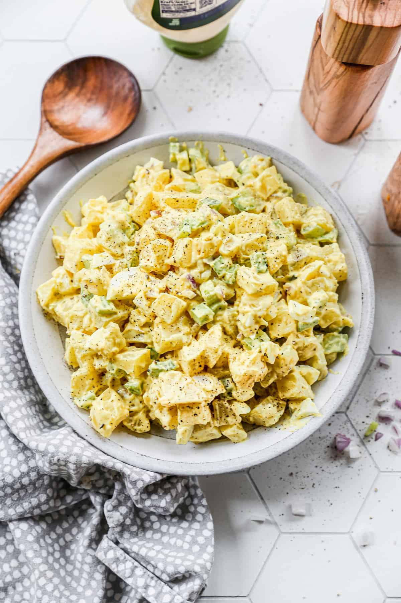
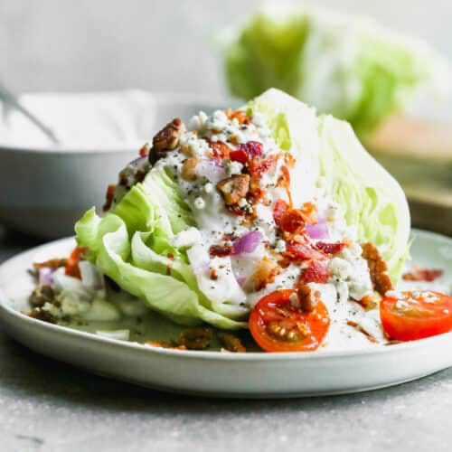
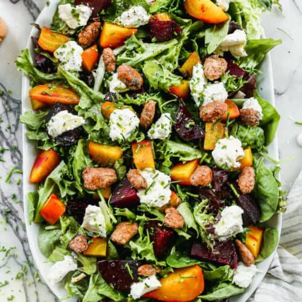

| SALAD | |||
|---|---|---|---|
| POTATO SALAD | 5$ | This Classic Potato Salad recipe is made with Yukon Gold potatoes, hard boiled eggs, and a creamy dressing |  |
| WEDGE SALAD | 10 $ | A delicious, crisp, iceberg Wedge Salad recipe topped with bacon crumbles, onion, tomatoes and a creamy homemade blue cheese dressing. |  |
| BEET SALAD | 7 $ | This roasted Beet Salad recipe is bursting with flavor from fresh beets paired with whipped goat cheese . It’s a simple and impressive salad any guest will love! |  |
| SANDWICHES | |||
| TUNA MELT | 6$ | Tuna Melt recipe is full of flavor from seasoned tuna salad, layered with toppings and cheese |
|
| MEXICAN TORTA | 8$ | This Mexican Torta or Torta Mexicana is a popular Mexican sandwich with crispy breaded chicken (chicken milanese), cheese, refried beans, guacamole, and pickled peppers |
|
| CROQUE MADAME | 7 $ | Simple and elegant Croque Madame recipe made with ham, gruyere, parmesan cheese, a layer of béchamel sauce, and topped with a fried egg |
|